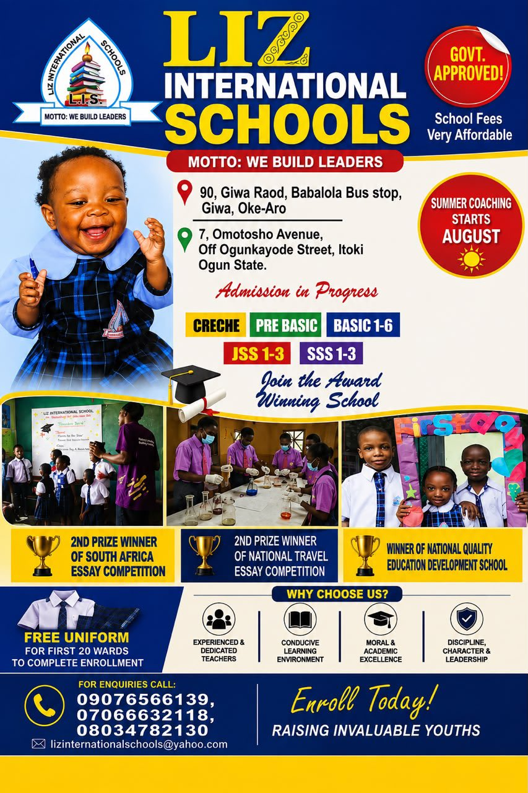

At Liz International School, we believe education is more than passing examinations. We nurture curiosity, creativity, confidence and leadership through engaging learning experiences that prepare learners for lifelong success.
Our dedicated teachers create a supportive environment where every child is encouraged to discover their strengths and achieve their full potential.
Our Schools
Our curriculum is carefully structured to support every stage of your child's educational journey, from early childhood through secondary education.
A caring and stimulating environment where young learners develop confidence, communication skills and a love for learning through play-based education.
Our Primary School builds strong academic foundations while encouraging creativity, discipline, teamwork and leadership.
Students are equipped with academic excellence, leadership skills and critical thinking needed for higher education and future careers.
Our curriculum is carefully designed to meet the developmental needs of learners at every stage while preparing them for future academic and personal success.
Our teaching approach combines experienced educators, modern learning resources and practical experiences to help every learner achieve academic excellence.
Our experienced and passionate educators provide individualized attention, ensuring every learner reaches their full potential.
ICT is integrated into classroom learning to prepare students for a rapidly evolving digital world.
Learners develop confidence through experiments, projects and hands-on activities that connect theory with real life.
Regular assessments help monitor progress while encouraging consistent improvement throughout the academic year.
Education extends beyond the classroom. Our students participate in activities that build confidence, teamwork, creativity and leadership.
Football, athletics, basketball and indoor games that promote teamwork, discipline and healthy living.
Learners discover and develop their creative talents through music, drama and stage performances.
Students explore technology, digital literacy and innovation through practical ICT activities.
Activities that improve communication, public speaking and critical thinking skills.
Students participate in exciting experiments and projects that encourage curiosity and innovation.
Creative activities including drawing, painting and craftwork that inspire imagination and self-expression.
Our learning environment is designed to provide students with the resources they need to learn comfortably, explore confidently and achieve academic excellence.
A quiet and resourceful environment that encourages reading, research and independent learning.
Modern computer facilities help students develop essential digital skills for today's world.
Practical science laboratories allow students to carry out experiments that reinforce classroom learning.
Spacious, well-ventilated classrooms create an atmosphere that supports effective teaching and learning.
Students participate in sporting activities that promote physical fitness, teamwork and healthy competition.
A secure and child-friendly environment where learners feel safe, respected and encouraged to excel.
At Liz International School, we are committed to nurturing confident, disciplined and academically excellent learners. Join us today and give your child the opportunity to thrive in a supportive learning environment.